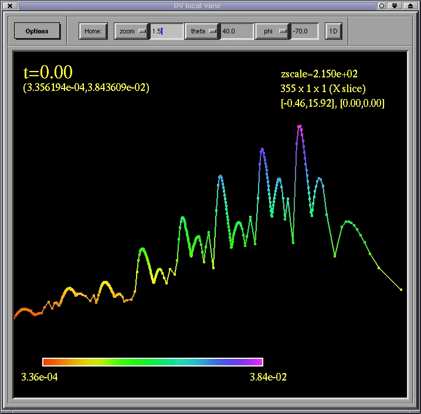

Visualizing 1D data
The DV was not designed to visualize 1D data sets (use xvs
instead), however the 2D local view facility
can produce rudimentary plots of 1D grids. If you send 1D data to the local
view, it will convert it to a 2D vector image, with the 1D coordinate information
becoming the x coordinate of the 2D picture, and the function values
the z (height) coordinate. To visualize such data with the 2D viewer,
click on the 1D button (instead of Home) to appropriately
adjust the viewing angle. All track-ball operations still work with 1D
curves, though rotation is of dubious value.

Home
Previous
Next